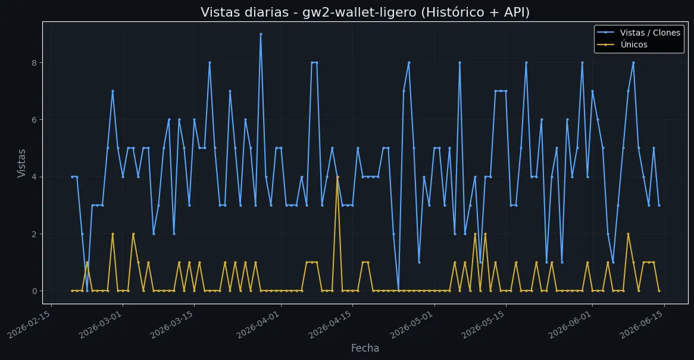
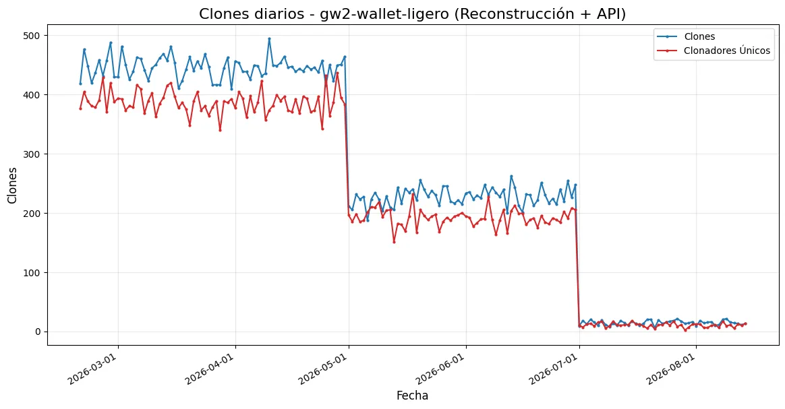

Visualización y respaldo de métricas a largo plazo para evitar la restricción de 14 días de GitHub. Datos reconstruidos desde el 19 de febrero de 2026 y combinados con Google Analytics.

La línea azul representa el total de visitas diarias a tu repositorio. La línea dorada refleja los usuarios únicos que ingresaron cada día. Este histórico combina datos de Google Analytics (hasta agosto 2026) y datos en tiempo real de la API de GitHub.

La línea azul muestra el número de clones (descargas) de tu repositorio por día. La línea dorada indica cuántos desarrolladores únicos realizaron esos clones. Datos históricos reconstruidos con transiciones suaves y fusionados con la API de GitHub.